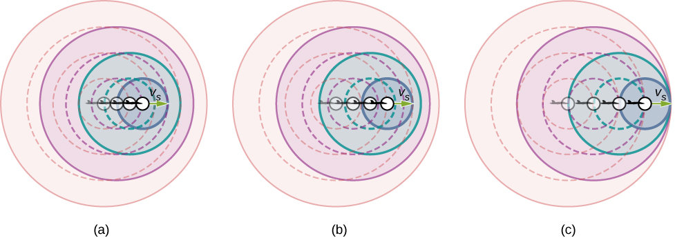
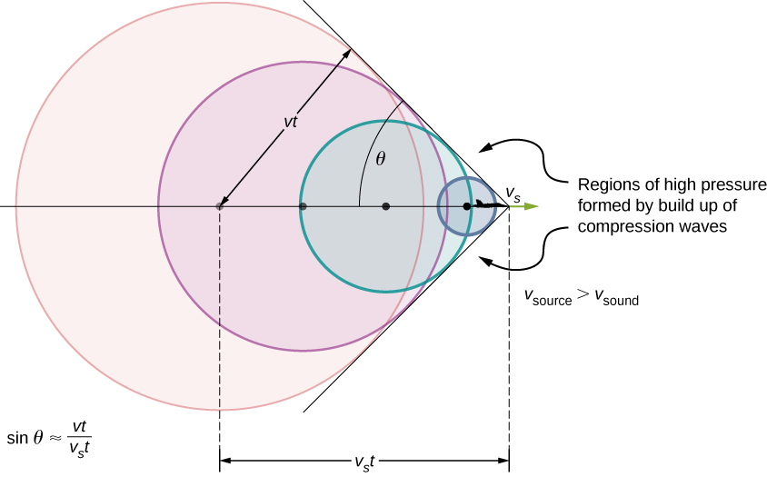
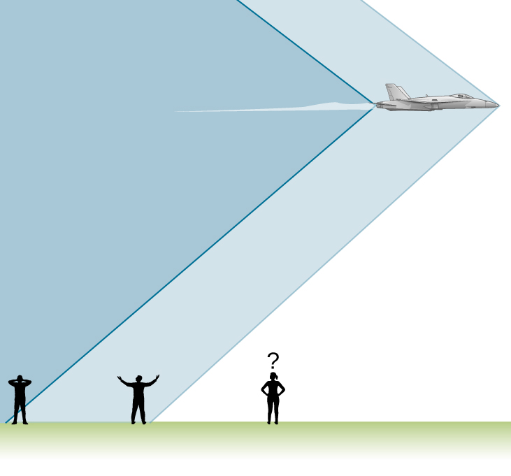
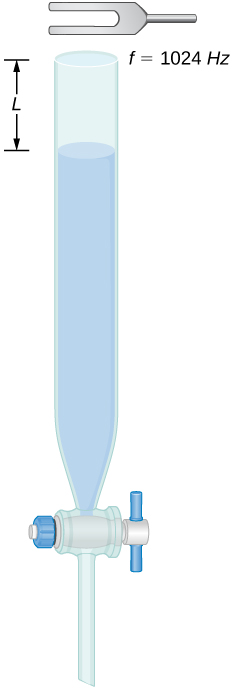
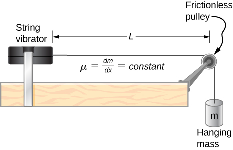
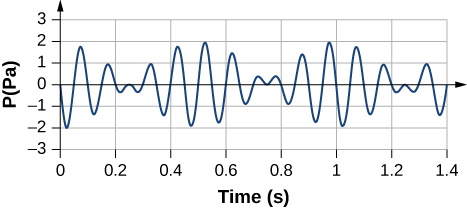

Describe the difference between sonic booms and shock waves
Describe a bow wake
When discussing the Doppler effect of a moving source and a stationary observer, the only cases we considered were cases where the source was moving at speeds that were less than the speed of sound. Recall that the observed frequency for a moving source approaching a stationary observer is As the source approaches the speed of sound, the observed frequency increases. According to the equation, if the source moves at the speed of sound, the denominator is equal to zero, implying the observed frequency is infinite. If the source moves at speeds greater than the speed of sound, the observed frequency is negative.
What could this mean? What happens when a source approaches the speed of sound? It was once argued by some scientists that such a large pressure wave would result from the constructive interference of the sound waves, that it would be impossible for a plane to exceed the speed of sound because the pressures would be great enough to destroy the airplane. But now planes routinely fly faster than the speed of sound. On July 28, 1976, Captain Eldon W. Joersz and Major George T. Morgan flew a Lockheed SR-71 Blackbird #61-7958 at 3529.60 km/h (2193.20 mi/h), which is Mach 2.85. The Mach number is the speed of the source divided by the speed of sound:
You will see that interesting phenomena occur when a source approaches and exceeds the speed of sound.
Doppler Effect and High Velocity
What happens to the sound produced by a moving source, such as a jet airplane, that approaches or even exceeds the speed of sound? The answer to this question applies not only to sound but to all other waves as well. Suppose a jet plane is coming nearly straight at you, emitting a sound of frequency The greater the plane’s speed the greater the Doppler shift and the greater the value observed for ([link]).
Because of the Doppler shift, as a moving source approaches a stationary observer, the observed frequency is higher than the source frequency. The faster the source is moving, the higher the observed frequency. In this figure, the source in (b) is moving faster than the source in (a). Shown are four time steps, the first three shown as dotted lines. (c) If a source moves at the speed of sound, each successive wave interfere with the previous one and the observer observes them all at the same instant.

Now, as approaches the speed of sound, approaches infinity, because the denominator in approaches zero. At the speed of sound, this result means that in front of the source, each successive wave interferes with the previous one because the source moves forward at the speed of sound. The observer gets them all at the same instant, so the frequency is infinite [part (c) of the figure].
Shock Waves and Sonic Booms
If the source exceeds the speed of sound, no sound is received by the observer until the source has passed, so that the sounds from the approaching source are mixed with those from it when receding. This mixing appears messy, but something interesting happens—a shock wave is created ([link]).
Sound waves from a source that moves faster than the speed of sound spread spherically from the point where they are emitted, but the source moves ahead of each wave. Constructive interference along the lines shown (actually a cone in three dimensions) creates a shock wave called a sonic boom. The faster the speed of the source, the smaller the angle .

Constructive interference along the lines shown (a cone in three dimensions) from similar sound waves arriving there simultaneously. This superposition forms a disturbance called a shock wave, a constructive interference of sound created by an object moving faster than sound. Inside the cone, the interference is mostly destructive, so the sound intensity there is much less than on the shock wave. The angle of the shock wave can be found from the geometry. In time t the source has moved and the sound wave has moved a distance vt and the angle can be found using Note that the Mach number is defined as so the sine of the angle equals the inverse of the Mach number,
You may have heard of the common term ‘sonic boom.’ A common misconception is that the sonic boom occurs as the plane breaks the sound barrier; that is, accelerates to a speed higher than the speed of sound. Actually, the sonic boom occurs as the shock wave sweeps along the ground.
An aircraft creates two shock waves, one from its nose and one from its tail ([link]). During television coverage of space shuttle landings, two distinct booms could often be heard. These were separated by exactly the time it would take the shuttle to pass by a point. Observers on the ground often do not see the aircraft creating the sonic boom, because it has passed by before the shock wave reaches them, as seen in the figure. If the aircraft flies close by at low altitude, pressures in the sonic boom can be destructive and break windows as well as rattle nerves. Because of how destructive sonic booms can be, supersonic flights are banned over populated areas.
Two sonic booms experienced by observers, created by the nose and tail of an aircraft as the shock wave sweeps along the ground, are observed on the ground after the plane has passed by.

Shock waves are one example of a broader phenomenon called bow wakes. A bow wake, such as the one in [link], is created when the wave source moves faster than the wave propagation speed. Water waves spread out in circles from the point where created, and the bow wake is the familiar V-shaped wake, trailing the source. A more exotic bow wake is created when a subatomic particle travels through a medium faster than the speed of light travels in that medium. (In a vacuum, the maximum speed of light is in the medium of water, the speed of light is closer to 0.75c.) If the particle creates light in its passage, that light spreads on a cone with an angle indicative of the speed of the particle, as illustrated in [link]. Such a bow wake is called Cerenkov radiation and is commonly observed in particle physics.
Bow wake created by a duck. Constructive interference produces the rather structured wake, whereas relatively little wave action occurs inside the wake, where interference is mostly destructive. (credit: Horia Varlan)The blue glow in this research reactor pool is Cerenkov radiation caused by subatomic particles traveling faster than the speed of light in water. (credit: Idaho National Laboratory)
Summary
The Mach number is the velocity of a source divided by the speed of sound,
When a sound source moves faster than the speed of sound, a shock wave is produced as the sound waves interfere.
A sonic boom is the intense sound that occurs as the shock wave moves along the ground.
The angle the shock wave produces can be found as
A bow wake is produced when an object moves faster than the speed of a mechanical wave in the medium, such as a boat moving through the water.
Key Equations
Pressure of a sound wave
Displacement of the oscillating molecules of a sound wave
Velocity of a wave
Speed of sound in a fluid
Speed of sound in a solid
Speed of sound in an ideal gas
Speed of sound in air as a function of temperature
Decrease in intensity as a spherical wave expands
Intensity averaged over a period
Intensity of sound
Sound intensity level
Resonant wavelengths of a tube closed at one end
Resonant frequencies of a tube closed at one end
Resonant wavelengths of a tube open at both ends
Resonant frequencies of a tube open at both ends
Beat frequency produced by two waves that differ in frequency
Observed frequency for a stationary observer and a moving source
Observed frequency for a moving observer and a stationary source
Doppler shift for the observed frequency
Mach number
Sine of angle formed by shock wave
Conceptual Questions
What is the difference between a sonic boom and a shock wave?
Due to efficiency considerations related to its bow wake, the supersonic transport aircraft must maintain a cruising speed that is a constant ratio to the speed of sound (a constant Mach number). If the aircraft flies from warm air into colder air, should it increase or decrease its speed? Explain your answer.
The speed of sound decreases as the temperature decreases. The Mach number is equal to so the plane should slow down.
When you hear a sonic boom, you often cannot see the plane that made it. Why is that?
Problems
An airplane is flying at Mach 1.50 at an altitude of 7500.00 meters, where the speed of sound is How far away from a stationary observer will the plane be when the observer hears the sonic boom?
A jet flying at an altitude of 8.50 km has a speed of Mach 2.00, where the speed of sound is How long after the jet is directly overhead, will a stationary observer hear a sonic boom?
The shock wave off the front of a fighter jet has an angle of . The jet is flying at 1200 km/h. What is the speed of sound?
A plane is flying at Mach 1.2, and an observer on the ground hears the sonic boom 15.00 seconds after the plane is directly overhead. What is the altitude of the plane? Assume the speed of sound is
A bullet is fired and moves at a speed of 1342 mph. Assume the speed of sound is What is the angle of the shock wave produced?
A speaker is placed at the opening of a long horizontal tube. The speaker oscillates at a frequency of f, creating a sound wave that moves down the tube. The wave moves through the tube at a speed of The sound wave is modeled with the wave function . At time , an air molecule at is at the maximum displacement of 6.34 nm. At the same time, another molecule at has a displacement of 2.30 nm. What is the wave function of the sound wave, that is, find the wave number, angular frequency, and the initial phase shift?
An airplane moves at Mach 1.2 and produces a shock wave. (a) What is the speed of the plane in meters per second? (b) What is the angle that the shock wave moves?
Additional Problems
A 0.80-m-long tube is opened at both ends. The air temperature is The air in the tube is oscillated using a speaker attached to a signal generator. What are the wavelengths and frequencies of first two modes of sound waves that resonate in the tube?
;
A tube filled with water has a valve at the bottom to allow the water to flow out of the tube. As the water is emptied from the tube, the length L of the air column changes. A 1024-Hz tuning fork is placed at the opening of the tube. Water is removed from the tube until the mode of a sound wave resonates. What is the length of the air column if the temperature of the air in the room is

Consider the following figure. The length of the string between the string vibrator and the pulley is The linear density of the string is The string vibrator can oscillate at any frequency. The hanging mass is 2.00 kg. (a)What are the wavelength and frequency of mode? (b) The string oscillates the air around the string. What is the wavelength of the sound if the speed of the sound is ?

a. ; b.
Early Doppler shift experiments were conducted using a band playing music on a train. A trumpet player on a moving railroad flatcar plays a 320-Hz note. The sound waves heard by a stationary observer on a train platform hears a frequency of 350 Hz. What is the flatcar’s speed in mph? The temperature of the air is .
Two cars move toward one another, both sounding their horns . Car A is moving at 65 mph and Car B is at 75 mph. What is the beat frequency heard by each driver? The air temperature is .
Student A runs after Student B. Student A carries a tuning fork ringing at 1024 Hz, and student B carries a tuning fork ringing at 1000 Hz. Student A is running at a speed of and Student B is running at What is the beat frequency heard by each student? The speed of sound is
Suppose that the sound level from a source is 75 dB and then drops to 52 dB, with a frequency of 600 Hz. Determine the (a) initial and (b) final sound intensities and the (c) initial and (d) final sound wave amplitudes. The air temperature is and the air density is
; a. ; b. ; c. ; d.
The Doppler shift for a Doppler radar is found by , where is the frequency of the radar, f is the frequency observed by the radar, c is the speed of light, and v is the speed of the target. What is the beat frequency observed at the radar, assuming the speed of the target is much slower than the speed of light?
A stationary observer hears a frequency of 1000.00 Hz as a source approaches and a frequency of 850.00 Hz as a source departs. The source moves at a constant velocity of 75 mph. What is the temperature of the air?
A flute plays a note with a frequency of 600 Hz. The flute can be modeled as a pipe open at both ends, where the flute player changes the length with his finger positions. What is the length of the tube if this is the fundamental frequency?
Challenge Problems
Two sound speakers are separated by a distance d, each sounding a frequency f. An observer stands at one speaker and walks in a straight line a distance x, perpendicular to the the two speakers, until he comes to the first maximum intensity of sound. The speed of sound is v. How far is he from the speaker?
Consider the beats shown below. This is a graph of the gauge pressure versus time for the position The wave moves with a speed of (a) How many beats are there per second? (b) How many times does the wave oscillate per second? (c) Write a wave function for the gauge pressure as a function of time.

Two speakers producing the same frequency of sound are a distance of d apart. Consider an arc along a circle of radius R, centered at the midpoint of the speakers, as shown below. (a) At what angles will there be maxima? (b) At what angle will there be minima?
a. For maxima
b. For minima,
A string has a length of 1.5 m, a linear mass density , and a tension of 120 N. If the air temperature is what should the length of a pipe open at both ends for it to have the same frequency for the mode?
A string is fixed at both ends and is under a tension of 155 N. It oscillates in the mode and produces sound. A tuning fork is ringing nearby, producing a beat frequency of 23.76 Hz. (a) What is the frequency of the sound from the string? (b) What is the frequency of the tuning fork if the tuning fork frequency is lower? (c) What should be the tension of the string for the beat frequency to be zero?
a. ; b. ; c.
A string has a linear mass density , a length L, and a tension of , and oscillates in a mode n at a frequency f. Find the ratio of for a small change in tension.
A string has a linear mass density a length a tension of and oscillates in a mode . (a) What is the frequency of the oscillations? (b) Use the result in the preceding problem to find the change in the frequency when the tension is increased by .
a. ; b.
A speaker powered by a signal generator is used to study resonance in a tube. The signal generator can be adjusted from a frequency of 1000 Hz to 1800 Hz. First, a 0.75-m-long tube, open at both ends, is studied. The temperature in the room is (a) Which normal modes of the pipe can be studied? What are the frequencies and wavelengths? Next a cap is place on one end of the 0.75-meter-long pipe. (b) Which normal modes of the pipe can be studied? What are the frequencies and wavelengths?
A string on the violin has a length of 23.00 cm and a mass of 0.900 grams. The tension in the string 850.00 N. The temperature in the room is The string is plucked and oscillates in the mode. (a) What is the speed of the wave on the string? (b) What is the wavelength of the sounding wave produced? (c) What is the frequency of the oscillating string? (d) What is the frequency of the sound produced? (e) What is the wavelength of the sound produced?
a. ; b. ; c. ;
d. ; e.
Glossary
bow wake
v-shaped disturbance created when the wave source moves faster than the wave propagation speed
shock wave
wave front that is produced when a sound source moves faster than the speed of sound
sonic boom
loud noise that occurs as a shock wave as it sweeps along the ground
![Picture shows a triangle with two sides of r1 and 2. The height of a triangle is 6 meters. The altitude to the base of the triangle splits the base into two parts that are 2 meters and 3 meters long. Picture is a drawing of two speakers placed at a distance d apart. The sound waves produced by the speakers meet at the point r1 from the top speaker and r2 from the bottom one. R is the distance from the point located equidistantly between the speakers to the to point where there the waves meet. Line R forms angle theta with the line perpendicular to the line connecting two speakers.](CNX_UPhysics_17_08_ChalProb_3_img.jpg)